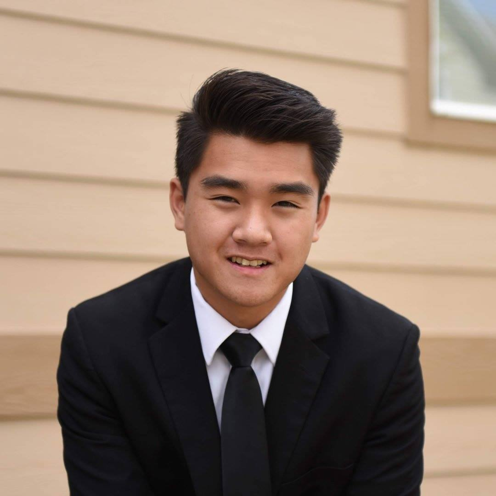

Tien Duong
Welcome to my about me page! My name is Tien Duong, and I am a recent graduate of the University of Colorado Boulder, where I earned a degree in Computer Science. Throughout my time at university, I developed a passion for technology and its power to make a positive impact on the world. I am constantly inspired by the endless possibilities that computer science presents, and I am eager to use my skills to contribute to the field. As a computer science student, I gained a solid foundation in programming, data structures, algorithms, and other key concepts. I enjoyed working on a variety of projects, from building websites and mobile apps to developing software and solving complex problems. Now that I have graduated, I am actively seeking opportunities to apply my skills and knowledge in a professional setting. I believe that computer science has the potential to change the world, and I am excited to be a part of that change. When I am not coding or working on technical projects, I enjoy spending time outdoors, hiking, and exploring the natural beauty of Colorado. I also enjoy tinkering and building things such as RC cars and computers. Thank you for taking the time to read my about me page. I look forward to connecting with others in the tech community and exploring the many exciting opportunities that the field of computer science has to offer.